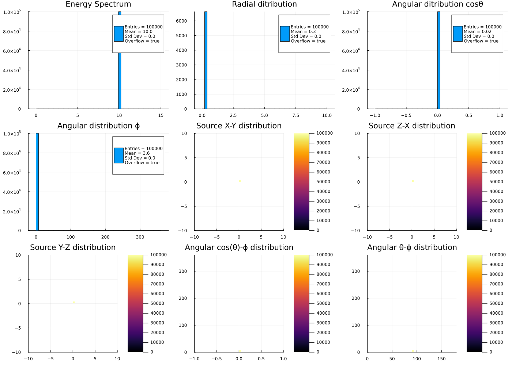
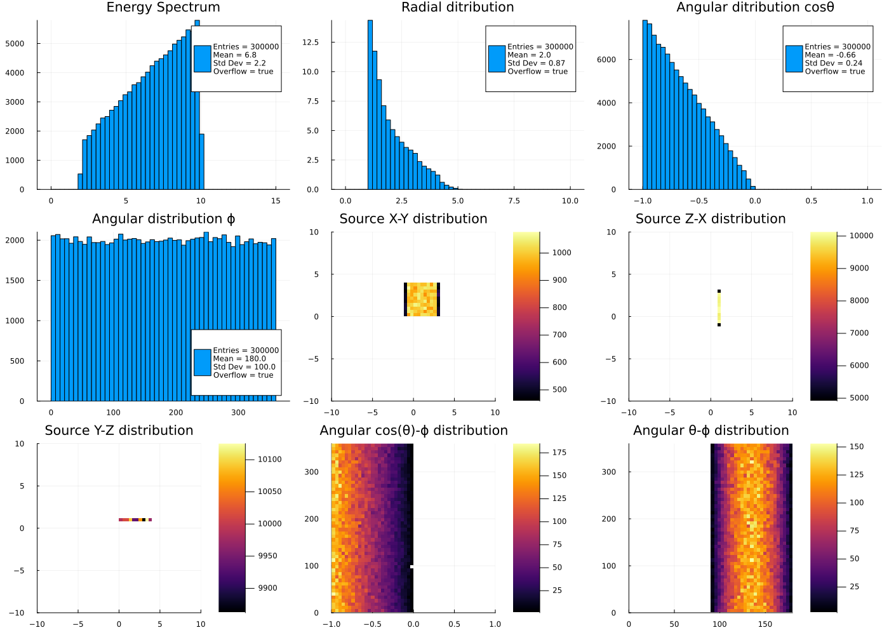

Extended/GPS Example
This example is to test the General Particle Source (GPS) in Geant4.jl. The GPS is a flexible and powerful tool to generate primary particles in Geant4. See the G4GeneralParticleSource documentation for the definition of parameters.
You can also download this example as a Jupyter notebook and a plain Julia source file.
Table of contents
- Loading the necessary Julia modules
- Define the Detector
- Define the Simulation Data
- Define the Simulation Actions
- GPS initialization
- Create the Application
- Configure and Initialize
- Run the simulation
Loading the necessary Julia modules
Load the Geant4, Geant4.PhysicalConstants and Geant4.SystemOfUnits modules. In addition we will use the Parameters module to handle the parameters of the detector. We will also use the FHist and Plots modules to handle the histograms and plots.
using Geant4
using Geant4.PhysicalConstants
using Geant4.SystemOfUnits
using Geant4.SystemOfUnits: deg
using Parameters
using FHist
using Plots
import DisplayAs: PNGDefine the Detector
The GPS detector is a simple box filled with air. The detector is defined by the GPSDetector structure. We include the GPSDetector.jl file not to clutter the example.
include(joinpath(@__DIR__, "GPSDetector.jl"))Define the Simulation Data
The simulation data structure GPSSimData consists of several histograms to store the simulation results.
const nbins = 50
@with_kw mutable struct GPSSimData <: G4JLSimulationData
hKEne = H1D("Energy Spectrum", nbins, 0., 15., :MeV)
hRad = H1D("Radial ditribution", nbins, 0., 10., :cm)
hAngcosθ = H1D("Angular ditribution cosθ", nbins, -1., 1.)
hAngϕ = H1D("Angular distribution ϕ", nbins, 0.,360., :deg)
hXYpos = H2D("Source X-Y distribution", nbins, -10., 10., nbins, -10., 10., (:cm, :cm))
hZXpos = H2D("Source Z-X distribution", nbins, -10., 10., nbins, -10., 10., (:cm, :cm))
hYZpos = H2D("Source Y-Z distribution", nbins, -10., 10., nbins, -10., 10., (:cm, :cm))
hcosθϕ = H2D("Angular cos(θ)-ϕ distribution", nbins, -1., 1., nbins, 0., 360., (:nounit, :deg))
hθϕ = H2D("Angular θ-ϕ distribution", nbins, 0., 180., nbins, 0., 360., (:deg, :deg))
endMain.var"##230".GPSSimDataWe define the function merge! and empty! functions to reduce the simulation results
function Base.merge!(x::D, y::D) where D <: G4JLSimulationData
for f in fieldnames(D)
merge!(getfield(x,f), getfield(y,f))
end
end
function Base.empty!(x::D) where D <: G4JLSimulationData
for f in fieldnames(D)
empty!(getfield(x,f))
end
endThe function do_plot is defined to plot the histograms of the simulation data.
function do_plot(data::GPSSimData)
img = Plots.plot(layout=(3,3), show=true, size=(1400,1000))
for (i,fn) in enumerate(fieldnames(GPSSimData))
h = getfield(data, fn)
Plots.plot!(subplot=i, h.hist, title=h.title, show=true, cgrad=:plasma)
end
return img
enddo_plot (generic function with 1 method)Define the Simulation Actions
The simulation actions are defined by the beginrun, endrun and pretrackaction functions.
function beginrun(::G4Run, app::G4JLApplication)::Nothing
data = getSIMdata(app)
empty!(data)
nothing
end
function endrun(::G4Run, app::G4JLApplication)::Nothing
# end run action is called for each workwer thread and the master one
if G4Threading!G4GetThreadId() < 0
data = app.simdata[1]
# this is the master thread, so we need to add all the simulation results
for d in app.simdata[2:end]
merge!(data, d)
end
end
end
function pretrackaction(track::G4Track, app::G4JLApplication)::Nothing
data = getSIMdata(app)
ekin = track |> GetKineticEnergy
vertex = track |> GetPosition
direction = track |> GetMomentumDirection
weight = track |> GetWeight
x = vertex |> getX
y = vertex |> getY
z = vertex |> getZ
θ = direction |> getTheta
ϕ = direction |> getPhi
ϕ < 0 && (ϕ += 2π)
r = vertex |> mag
dr = binedges(data.hRad.hist).uniform_edges.step |> Float64
dv = 4π * r^2 * dr
# fill histograms
push!(data.hKEne, ekin)
push!(data.hRad, r, 1.0/dv)
push!(data.hAngcosθ, cos(θ))
push!(data.hAngϕ, ϕ)
push!(data.hXYpos, x, y)
push!(data.hZXpos, z, x)
push!(data.hYZpos, y, z)
push!(data.hcosθϕ, cos(θ), ϕ)
push!(data.hθϕ, θ, ϕ)
nothing
end;GPS initialization
We define the GPS parameters and create the primary particle generator. This is equivalent to the particle gun in the previous examples.
gps = G4JLGeneralParticleSource(particle = "geantino",
energy = 10MeV,
direction = G4ThreeVector(1,0,0),
position = G4ThreeVector(1,2,1));Create the Application
app = G4JLApplication(detector = GPSDetector(), ## detector with parameters
simdata = GPSSimData(), ## simulation data structure
generator = gps, ## primary particle generator
nthreads = VERSION > v"1.9" ? 4 : 0, ## number of threads (MT)
physics_type = FTFP_BERT, ## what physics list to instantiate
##----Actions--------------------------------
pretrackaction_method = pretrackaction, ## pre-tracking action
beginrunaction_method = beginrun, ## begin-run action (initialize counters and histograms)
endrunaction_method = endrun, ## end-run action (print summary)
);
**************************************************************
Geant4 version Name: geant4-11-02-patch-01 [MT] (16-February-2024)
<< in Multi-threaded mode >>
Copyright : Geant4 Collaboration
References : NIM A 506 (2003), 250-303
: IEEE-TNS 53 (2006), 270-278
: NIM A 835 (2016), 186-225
WWW : http://geant4.org/
**************************************************************
Configure and Initialize
configure(app)
initialize(app)Run the simulation
We run the simulation with 100000 particles and plot the results.
beamOn(app,100000)
img = do_plot(app.simdata[1])
PNG(img)
Let's change the GPS parameters and run the simulation again.
ui`/gps/particle geantino`
ui`/gps/pos/type Plane`
ui`/gps/pos/shape Square`
ui`/gps/pos/centre 1 2 1 cm`
ui`/gps/pos/halfx 2 cm`
ui`/gps/pos/halfy 2 cm`
ui`/gps/ang/type cos`
ui`/gps/ene/type Lin`
ui`/gps/ene/min 2 MeV`
ui`/gps/ene/max 10 MeV`
ui`/gps/ene/gradient 1`
ui`/gps/ene/intercept 1`
beamOn(app,100000)
img = do_plot(app.simdata[1])
PNG(img)
This page was generated using Literate.jl.